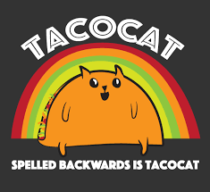

Palidrones
Palindrones date back at least to 79 AD, as a palindrome was found as a graffito at Herculaneum, a city buries by ash in that year. This has palindrome, called the Sator Square, consists of a sentence written in Latin: "Satro Arepo Tenet Opera Rotas" ("The Shower Arepo holds with effort the wheels"). It is remarkable for the fact that the first letters of each word from the first word, the second letters form the second word, and so forth. hence, it can be arranged into a word sqare that reads in four different ways: horizontally or vertically from either top left to bottom right or bottom right to top left. As such, they can be referred to as palindromatic. The palindromatic Latin riddle "In girum imus nocte et consumimur igni" ("we go in circle at night and are consumed by fire") describes the behavior of moths. it is likely that this palindrome is from medieval rather than ancient times. The second word, borrowed from Greek should properly be spelled gyrum.
Famous Palindromes
- Taco Cat.
- never off or even.
- A manm a plan, a canal - Panama
- Doc, note: I dessent a fastness. I diet of cod
- T. Eliot, top bard, notes putrid emanating, is sad; I'd assign it a name: gnat dirt upset on drap pot toilet
Palindrome Words
- Redivider
- Civic
- Radar
- Level
- kayak
Sentences or Phrases
- A man, a plan, a canal - Panama
- Do geese see God?
- Was it a car or a cat I saw?
- Go hang a salami, I'm a lasagna hog